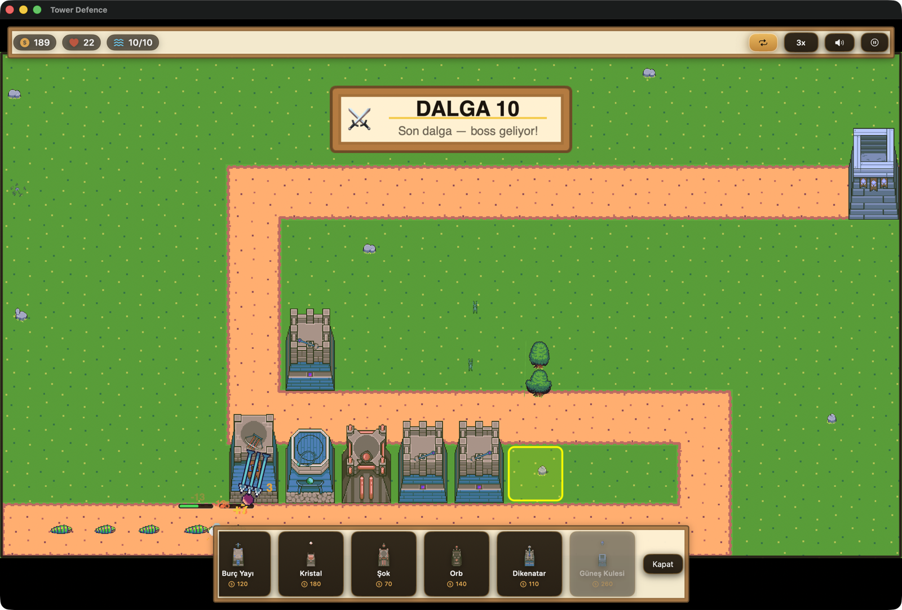
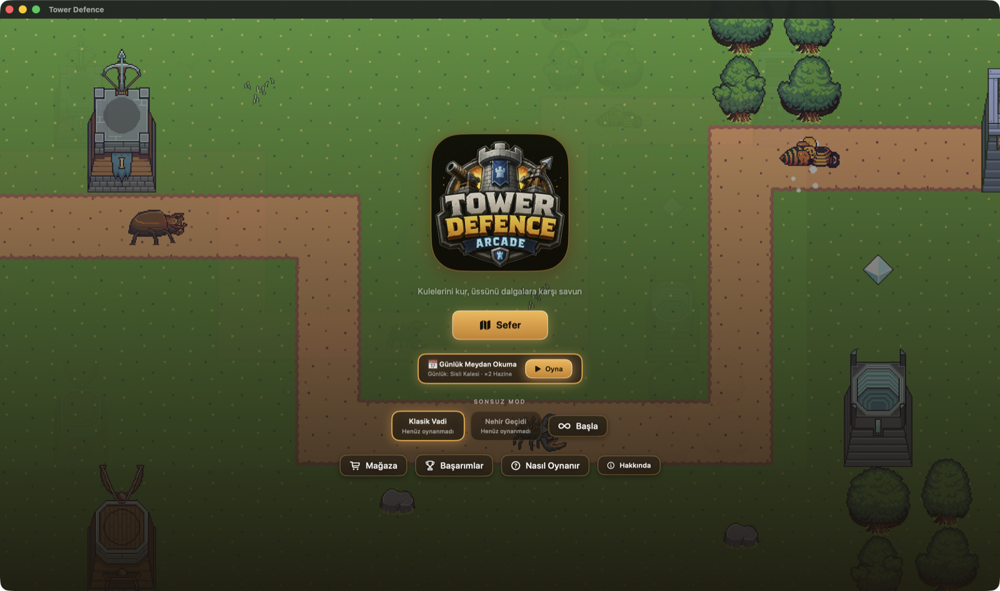
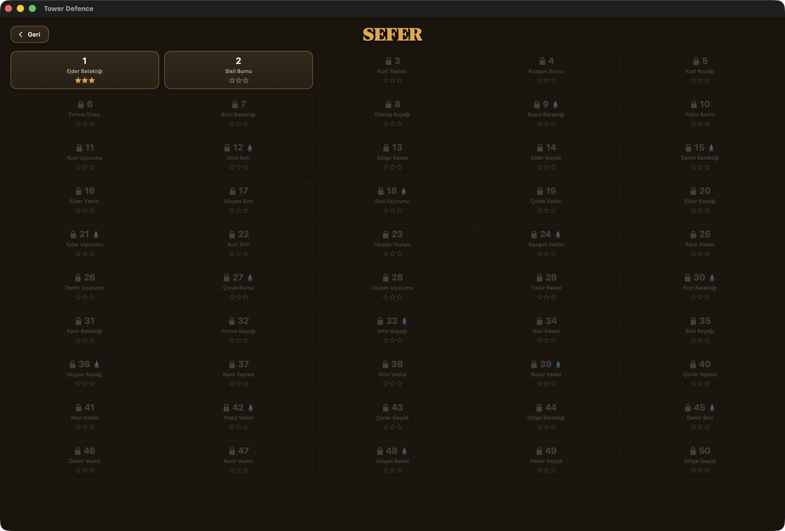
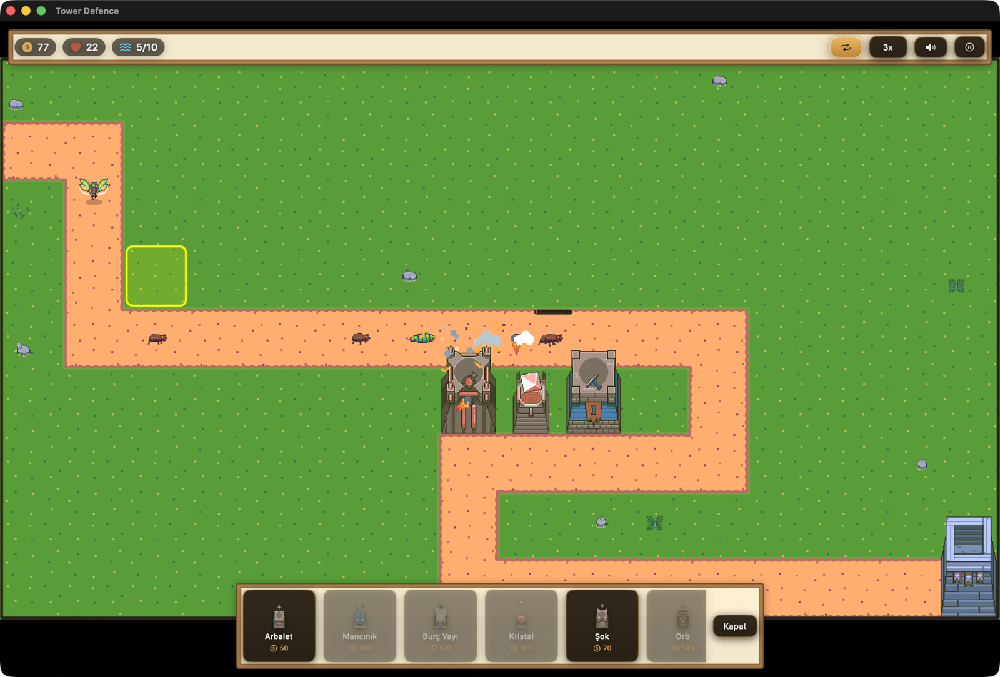

Kulelerini kur, üssünü dalgalara karşı savun.
macOS ve iOS'ta native çalışan, SwiftUI + SpriteKit ile yazılmış orta çağ temalı pixel-art kule savunma oyunu. Tamamen açık kaynak, tüm varlıklar CC0.
Kompakt ama derin: deterministik üretilmiş seviyeler, simülasyonla ayarlanmış denge ve bol tekrar oynanabilirlik.
Tohumlu ve deterministik üretilen 50 seviye: yol, nehir ve dalga kompozisyonu her cihazda aynı. Kalan cana göre 1-3 yıldız, kilit ilerlemesi.
Normal'den Kâbus'a dört kademe; her biri ayrı HP eğrisi izler. Kâbus, ancak diğer üç kademeyi tamamlayınca açılır — 3 canla hayatta kal.
Her gün herkese aynı, tarihe tohumlu tek seviye. Günde tek deneme — kazanırsan ×2 Hazine. Yarın yeni harita seni bekler.
İki el yapımı arenada (Klasik Vadi, köprülü Nehir Geçidi) bitmeyen dalgalara karşı rekor denemesi. Yenilgi kaçınılmaz — soru, kaçıncı dalgada.
Hızlı Düşmanlar, Cam Kuleler, Üç Kule, Altın Kıtlığı, Demir İrade. Birden fazlasını üst üste bindir, Hazine çarpanını ×4'e kadar katla.
Kusursuz zaferden Obsidyen Efendisi'ne 11 yerel başarım. Kazandıkların sonuç ekranında altın kapsül olarak parlar.
Buz, Kor ve Zehir kule skin setleri + Sonbahar haritası teması. 50 seviyeyi Kâbus'ta bitirene özel: 334 sprite'lık Obsidyen seti.
Başsız simülatör ve GreedyPolicy botuyla (BalanceLab) otomatik ayarlanan zorluk eğrileri. 176 birim testiyle doğrulanmış oyun çekirdeği.
El çizimi Foozle Spire pixel-art'ı, canlı ambiyans katmanı ve seviyeye göre değişen paletler.




Ücretsiz ve açık kaynak. İndir, oyna; beğenirsen depoya bir ⭐ bırak.
Apple Silicon & Intel. macOS 14+ önerilir.
iPhone ve iPad'de native dokunmatik kontrollerle.
App Store — yakındaXcode 26+ ve XcodeGen yeterli:
git clone https://github.com/dogukangecko/TowerDefenceArcade cd TowerDefence ./scripts/fetch_assets.sh ./scripts/fetch_spire.sh xcodegen generate open TowerDefense.xcodeproj
Bu oyun, eserlerini kamu malı olarak paylaşan sanatçılar sayesinde var. Teşekkürler!
Tüm görsel ve ses varlıkları CC0 (Public Domain) lisansıyla yayımlanmıştır — atıf zorunlu değil, ama hak edenlere teşekkür borç. Ayrıntılar: CREDITS.md